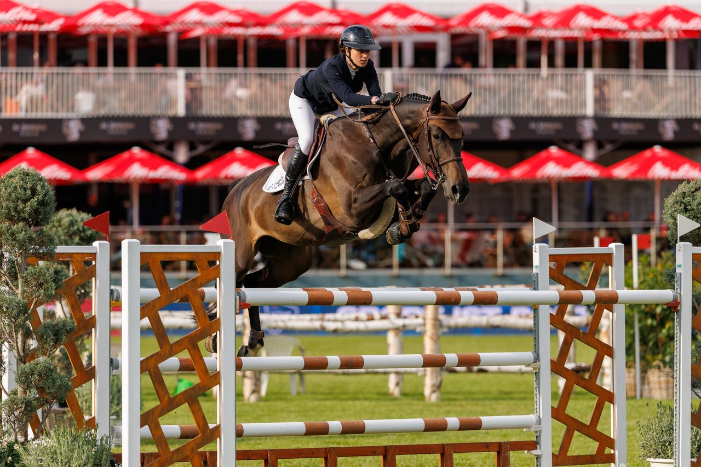

La Copa CDE regresa en septiembre con pruebas de 1'20 y 1'30 metros en Valencia
La Final ANCADES acogerá del 10 al 13 de septiembre en Moura Tours Valencia la Copa CDE en sus categorías de 1'20 y 1'30 metros, una cita pensada para los binomios que compiten con Caballo de Deporte Español.

La Copa CDE volverá a disputarse en septiembre dentro del programa de la Final ANCADES, que tendrá lugar del 10 al 13 de septiembre en las instalaciones de Moura Tours Valencia. Las pruebas, en las alturas de 1'20 y 1'30 metros, están abiertas a todos los jinetes y amazonas que compitan en salto con un Caballo de Deporte Español.
Las categorías de 1'20 y 1'30 metros representan una parte esencial del salto nacional, con binomios en proceso de consolidación y caballos que muestran su evolución deportiva. La Copa CDE nació para dar protagonismo a esos conjuntos que forman parte del crecimiento de la raza en el circuito español.
Disputar la Copa CDE dentro de la Final ANCADES permite formar parte de una cita que reunirá durante varios días a criadores, propietarios, jinetes y profesionales del sector, junto con otras competiciones nacionales ligadas al Caballo de Deporte Español. La inscripción está abierta para todos los binomios CDE que deseen participar en este encuentro de referencia del calendario nacional.
— Redacción de Hípica al Día